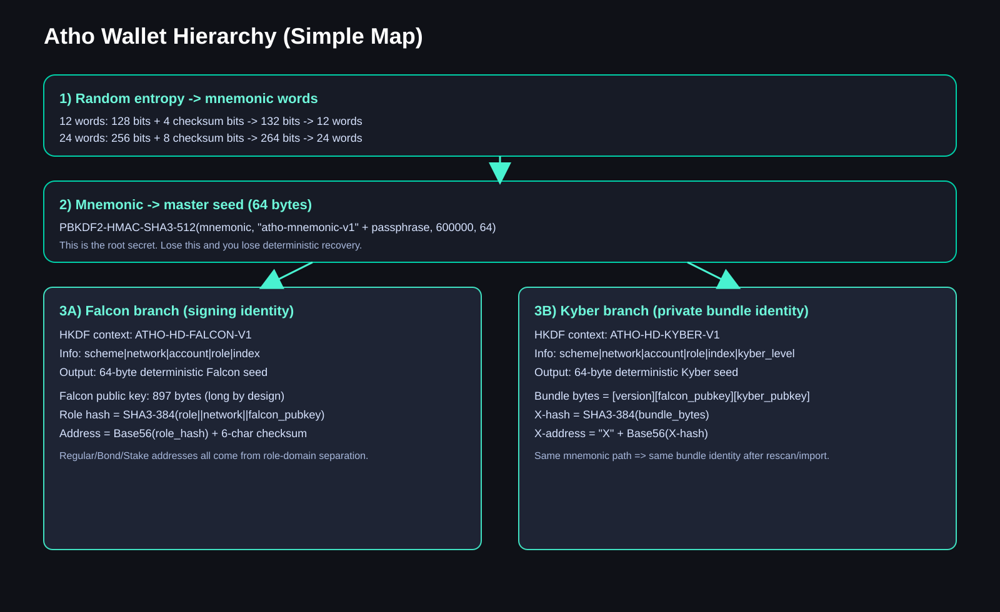
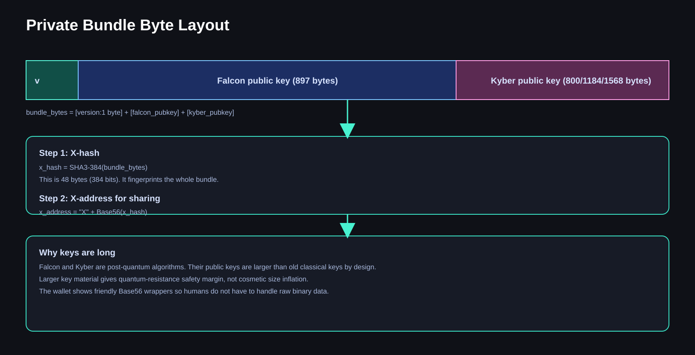

Atho Wallet Hierarchy Visual Guide (Beginner + Deep Technical)
Date: 2026-04-08
Audience: - Beginner users who want a simple mental model. - Operators and developers who need exact code-level math and derivation behavior.
Goal: - Explain from step 1 how mnemonic, seed, Falcon, Kyber, addresses, private bundles, and private notes work together. - Explain recovery rules and what is and is not recoverable. - Explain why keys are long and why that is expected in a post-quantum design.
0) Explain Like I Am 5 (the toy-box version)
Think of your wallet like a big toy factory with one master recipe card.
- Your mnemonic words are that recipe card.
- The wallet uses the recipe card to make one giant secret dough called the seed.
- From that seed, the wallet bakes two different toy families:
- Falcon toys: used to prove "this is really me" (signatures).
- Kyber toys: used to lock and unlock secret messages (private payload encryption).
- Then the wallet makes addresses from those toys:
- normal address (public receive/spend),
- bond address,
- stake address,
- private bundle identity (X-address).
If you keep the recipe card (mnemonic) and the same options (passphrase, account/index/role path), the factory can rebuild the same toy family again.
That is deterministic recovery.
1) Big Picture Diagram

What this means: - One mnemonic root can deterministically rebuild both public identity (Falcon path) and private receive identity (Kyber/bundle path). - Role separation is intentional. Regular, bond, and stake are domain-separated identities, even if they come from one root.
2) Core Terms (plain language + jargon)
- Entropy: random bytes the wallet generates first.
- Checksum bits: short hash-derived bits added to entropy to catch typing mistakes.
- Mnemonic: human-readable word list encoding entropy + checksum.
- Seed: 64-byte root secret derived from mnemonic using PBKDF2.
- PBKDF2: password-based key derivation function. Slows down brute-force attacks.
- HKDF: key expansion method with context labels so different branches are separated.
- Falcon: post-quantum signature scheme (identity + signing).
- Kyber: post-quantum KEM/encryption key agreement (private payload lock/unlock).
- HPK: hashed public key digest (role/network-domain hashed Falcon pubkey).
- Base56: human-oriented encoding alphabet with typo-resistant rules.
- Private bundle: binary package that contains Falcon public key + Kyber public key.
- X-hash / X-address: hash-based identifier for private bundle sharing.
- Note: private spendable object (private UTXO-like record).
- Nullifier: one-time spend marker that prevents private double-spend.
- Anchor/Merkle path: proof that a note exists in the private note tree.
3) Exact Mnemonic Math (from code)
Source behavior: Src/Accounts/mnemonic.py.
3.1 Supported mnemonic lengths
The code maps word-count to entropy bytes: - 12 words -> 16 bytes entropy (128 bits) - 24 words -> 32 bytes entropy (256 bits) - 48 words -> 64 bytes entropy (512 bits)
3.2 Checksum formula
checksum_bits = entropy_bits / 32
Checksum bits are taken from the start of SHA3-512(entropy).
3.3 Word conversion formula
bitstream = entropy_bits + checksum_bits
words = bitstream / 11
Each 11-bit chunk indexes one word in a 2048-word list.
Examples: - 12 words: 128 + 4 = 132 bits -> 132 / 11 = 12 - 24 words: 256 + 8 = 264 bits -> 264 / 11 = 24 - 48 words: 512 + 16 = 528 bits -> 528 / 11 = 48
3.4 Visual mnemonic math

4) Seed Derivation (PBKDF2 details)
Source behavior: Src/Accounts/mnemonic.py.
Mnemonic is normalized (NFKD). Passphrase is normalized (NFKD).
The code derives seed exactly as:
seed = PBKDF2-HMAC-SHA3-512(
password = normalized_mnemonic,
salt = "atho-mnemonic-v1" + normalized_passphrase,
iterations = 600000,
dklen = 64
)
Important: - A minimum of 100000 iterations is enforced by code guard. - Current default in code is 600000. - Output is 64 bytes.
Why this matters: - Same mnemonic + same passphrase + same scheme -> same seed. - Different passphrase -> different seed (completely different wallet tree).
5) Hierarchical Derivation into Falcon and Kyber
5.1 Falcon branch
Code uses domain-separated HKDF context:
context = "ATHO-HD-FALCON-V1"
info = "atho-mnemonic-v1|<network>|<account>|<role>|<index>"
falcon_seed_64 = HKDF-SHA3-512(seed, context, info, 64)
This deterministic Falcon seed goes to deterministic Falcon keygen.
5.2 Kyber branch
Code uses another independent context:
context = "ATHO-HD-KYBER-V1"
info = "atho-mnemonic-v1|<network>|<account>|<role>|<index>|kyber=<level>"
kyber_seed_64 = HKDF-SHA3-512(seed, context, info, 64)
Then Kyber deterministic keypair is generated.
5.3 Why separate contexts are critical
If Falcon and Kyber reused one derivation domain, cross-protocol key coupling risk increases.
Domain separation means: - Falcon material cannot accidentally become Kyber material. - Changing one branch policy does not silently break the other.
6) Address Math (role/domain separated)
Role hash digest uses SHA3-384 with domain tags and network tags.
At a high level:
role_digest = SHA3-384(role_domain || 0x00 || network_domain || 0x00 || falcon_pubkey_bytes)
Then Base56 address formatting uses:
body = role_prefix + Base56(role_digest)
checksum_raw = SHA3-256(body_utf8)[0:4]
checksum_b56 = Base56(checksum_raw), fixed to 6 chars
address = body + checksum_b56
From code: - Base56 alphabet excludes ambiguous chars. - Checksum bytes = 4. - Checksum printed length = 6 Base56 chars.
So addresses are: - human-shareable wrapper, - with typo-detection checksum, - while cryptographic identity still comes from hashed key bytes.
7) Private Bundle Format and Why Keys Are Long
7.1 Visual layout

7.2 Exact binary structure
From Src/Utility/private_bundle.py:
bundle_bytes = [version:1 byte] || [falcon_pubkey] || [kyber_pubkey]
Typical lengths: - Falcon public key: 897 bytes. - Kyber public key: 800, 1184, or 1568 bytes (level-dependent).
7.3 Bundle identity math
x_hash = SHA3-384(bundle_bytes)
x_address = "X" + Base56(x_hash)
7.4 "Why are private keys and public keys so long?"
Short answer: because this is post-quantum crypto.
Long answer: - Falcon and Kyber use lattices and structures that require larger key/signature/ciphertext sizes than legacy ECC. - Bigger payloads are expected engineering tradeoffs for quantum-resistance. - This is not accidental bloat. It is the design cost for future safety.
8) Private Note Derivation and Spend Safety
8.1 Visual note math

8.2 Master note seed
From key_manager.py logic:
note_master = SHA3-256(
"atho/private-note-master/v1" || network || falcon_pub || f || g || F || G
)
8.3 Per-note deterministic seed
From deterministic_keygen.py path:
note_seed = SHA3-256(
domain || network || note_master || account_u32_le || counter_u64_le
)
Counter gives deterministic stream progression.
8.4 Spend prevention logic (concept)
For private spends, consensus/mempool expect valid proof material: - nullifier must be unique (no replay/double-spend), - anchor/path must prove membership in note tree, - note signature must match expected note key and spend digest, - amount relations must be valid (no mint from thin air), - malformed inputs get rejected.
9) Private Transaction Flow (easy view + technical view)

9.1 Fee math
System policy (current constants):
- fee_per_vb_atoms = 500
- min_tx_fee_atoms = 200000
General formula:
required_fee_atoms = max(vsize * fee_per_vb_atoms, min_tx_fee_atoms)
With 1 ATHO = 1,000,000,000 atoms, this means:
- 500 atoms/vB = 5e-7 ATHO/vB.
9.2 Confirmation policy (current constants)
- regular tx confirmations required: 10
- private tx confirmations required: 10
- coinbase maturity blocks: 150
So private notes should be tracked as pending first, then move to spendable when confirmation requirement is met.
10) Recovery Process (exact behavior)

Recovery has two layers:
10.1 Deterministic identity reconstruction
Given same: - mnemonic, - passphrase, - account/index/role derivation path, - network,
the wallet can recreate: - Falcon identity, - role addresses, - deterministic Kyber/bundle identity.
10.2 Chain-state reconstruction
After identity is rebuilt, node must fully sync/rescan chain to recover: - confirmed public UTXOs, - confirmed private notes and spend states, - matured/spendable vs pending classification.
10.3 What mnemonic does NOT restore by itself
Mnemonic alone does not magically restore purely local transient state, for example: - only-local mempool pending metadata not yet finalized on-chain, - ephemeral UI-only cache artifacts.
Canonical truth is confirmed chain state after scan.
11) Why deterministic design was chosen
- Reproducible recovery.
-
If path inputs match, key outputs match.
-
Operational resilience.
-
Device loss can be recovered from mnemonic + chain rescan.
-
Auditable derivation.
-
Deterministic formulas make behavior predictable and testable.
-
Separation of duties.
-
Falcon branch and Kyber branch are domain-separated.
-
Reduced accidental identity drift.
- The same wallet path does not produce random new identity each restart.
12) Important security boundaries
- Mnemonic is the crown jewel.
- Passphrase is a second lock. Without correct passphrase, same words produce a different wallet tree.
- Key files can still contain additional local state and metadata; backup policy still matters.
- Confirmed chain state is the source of truth for balances.
- Mempool-only state is temporary.
13) Jargon decoder (mini dictionary)
- NFKD normalization: standard way to normalize unicode text so same phrase bytes are reproducible.
- Domain separation: adding fixed tags/contexts so one hash/derivation use cannot be confused with another.
- Nullifier: one-time marker created when spending a private note. Reusing it means replay attempt.
- Anchor: snapshot root (or root-linked value) the proof references.
- Merkle path: sibling hash path proving note exists under an anchor root.
- Commitment: cryptographic binding to note data without exposing raw data.
- Spend digest: canonical hashed message that signatures are checked against.
14) Step-by-step example (toy numbers for intuition)
This is conceptual, not real key material.
- User creates 24-word mnemonic.
- Wallet builds 256-bit entropy + 8 checksum bits.
- PBKDF2 generates 64-byte seed.
- Falcon branch derives deterministic seed and keypair.
- Role hashes produce regular/bond/stake addresses.
- Kyber branch derives deterministic seed and keypair.
- Bundle is assembled and hashed to X-address.
- Wallet receives private outputs targeted to that bundle.
- On restore with same mnemonic/passphrase/path:
- addresses match,
- bundle identity matches,
- full scan restores confirmed balances.
15) FAQ (high detail)
Q1) Is mnemonic generated from seed?
No. In this implementation, entropy is generated first, mnemonic is encoded from entropy+checksum, then seed is derived from mnemonic.
Q2) Why can two wallets with same words look different?
Common reasons: - different passphrase, - different account/index/role path, - different network.
Q3) Why are Falcon and Kyber both needed?
Falcon signs ownership and spend intent. Kyber encrypts private payload exchange for note delivery/decode.
Q4) Why not one key type for everything?
Separation reduces cross-protocol risk and keeps concerns cleaner: signing vs encapsulation.
Q5) Is address checksum optional?
No. It is integral for typo detection and safe sharing.
Q6) Why Base56 instead of hex everywhere?
Base56 is shorter, more human-friendly, and avoids visually ambiguous characters.
Q7) If I lose local key JSON, can mnemonic recover me?
Yes for deterministic key identity and confirmed on-chain state, after full sync/rescan.
Q8) Will pending mempool items always recover?
Not guaranteed as local transient state. They are resolved by eventual chain inclusion or drop.
Q9) Why does private send sometimes require shielding first?
If you do not have enough confirmed private note balance, wallet may need public -> private-self first.
Q10) Does private sending hide everything?
Private outputs are hidden as commitments, but flow design still matters. Public legs are public by definition.
Q11) Why is role separation important?
It prevents one role identity from being accidentally reused as another role in policy-sensitive logic.
Q12) Can deterministic keys still be secure?
Yes, if root seed is secret and derivation is domain-separated and cryptographically strong.
Q13) What if attacker sees my public address?
Public address alone does not reveal private key. It is derived from hashed pubkey and protected by signature hardness assumptions.
Q14) What if attacker sees my X-address?
X-address is an identifier from bundle hash, not your private secret itself.
Q15) Why are some private tx payload fields large?
Because they include proof-related data, encrypted payloads, commitments, and post-quantum key material.
Q16) What prevents private double-spend?
Nullifier uniqueness checks plus proof/signature validation in mempool and block validation paths.
Q17) What prevents fake note minting?
Amount/commit/proof validation and consensus rules. Inputs and outputs must satisfy protocol constraints.
Q18) Is wallet UI balance always authoritative?
UI is a view. Consensus-confirmed chain state is authoritative.
Q19) Why do notes move pending -> spendable?
Confirmation policy exists to avoid spendability on unstable/unconfirmed state.
Q20) Why does passphrase matter so much?
Passphrase changes PBKDF2 salt input. Same words + different passphrase = completely different seed and keys.
Q21) Can I share mnemonic to support staff?
Never. Mnemonic + passphrase controls your entire deterministic wallet tree.
Q22) Why store notes in a separate notes JSON too?
Operational/audit clarity and faster reconciliation workflows, while canonical spend truth remains consensus.
Q23) If chain is wiped and restarted, should old spendable notes still show?
No. Proper rescan/reconciliation should self-heal against current chain state.
Q24) Why does code enforce integer atoms?
Integer atoms avoid floating-point rounding errors in monetary accounting.
Q25) What is the single most important backup set?
Mnemonic phrase, passphrase (if used), and derivation path metadata. Then run full node sync/rescan.
16) Current protocol policy snapshot (from constants)
These values are currently hard-coded in Src/Utility/const.py policy tuning and invariants:
- Atoms per coin:
1,000,000,000 - Fee floor:
500 atoms/vB(5e-7 ATHO/vB) - Min transaction fee:
200,000 atoms - Dust limit:
20,000 atoms(1/10of min tx fee) - Tx confirmations required:
10 - Private tx confirmations required:
10 - Coinbase maturity:
150 - Min stake:
20 ATHO - Max stake per address:
1,000 ATHO - Max network staked total:
75,000,000 ATHO - Max new stake rolling 30d:
50,000 ATHO - Stake rolling window blocks:
21,600 - Stake unbonding delay blocks:
129,600 - Min mining bond:
25 ATHO - Max bond per address:
30 ATHO - Bond unbonding delay blocks:
10,080 - Fee pool post-tail buckets: miner
25%, stake30%(remaining share can be burn path per emissions/pool routing logic)
17) Final takeaway
If you remember only five things:
- Mnemonic + passphrase + path is your deterministic root identity.
- Falcon and Kyber are separate branches on purpose.
- Long key sizes are expected in post-quantum cryptography.
- Private spends depend on note proofs/nullifiers, not just a simple signature.
- Recovery means deterministic key rebuild plus full chain rescan for confirmed state.
That is the wallet hierarchy in both kid-simple language and code-accurate math.